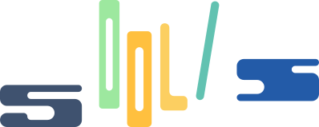
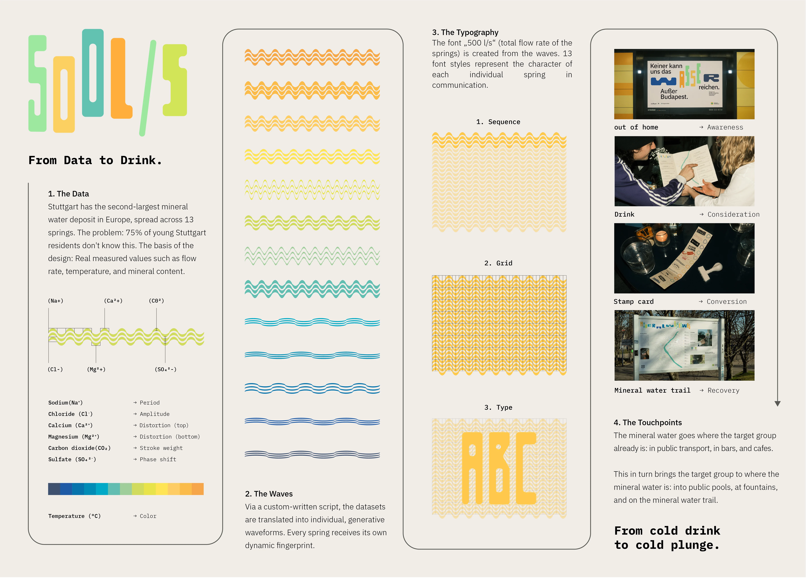
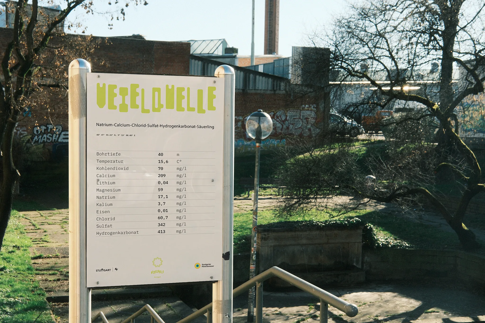
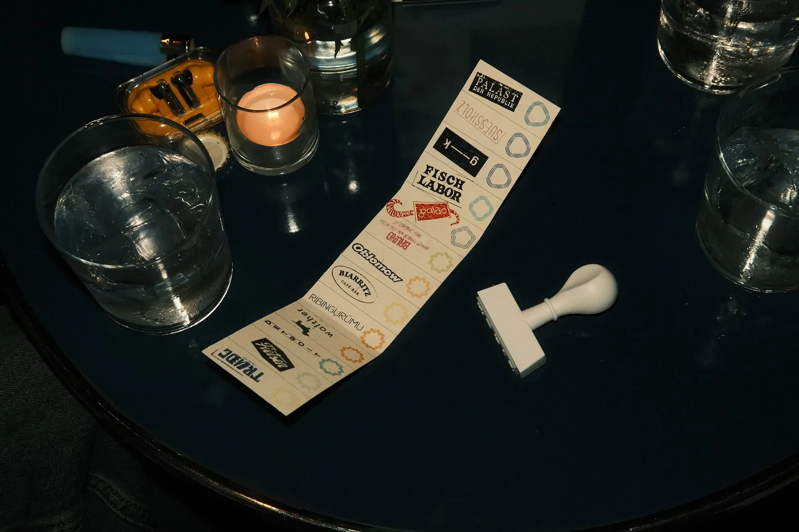
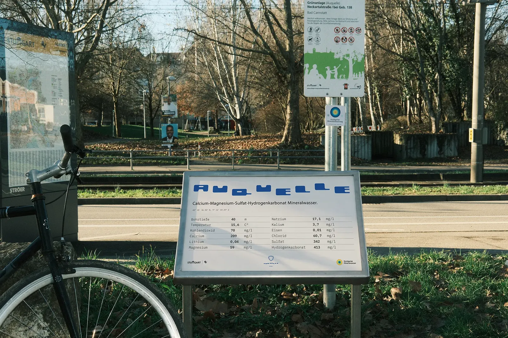
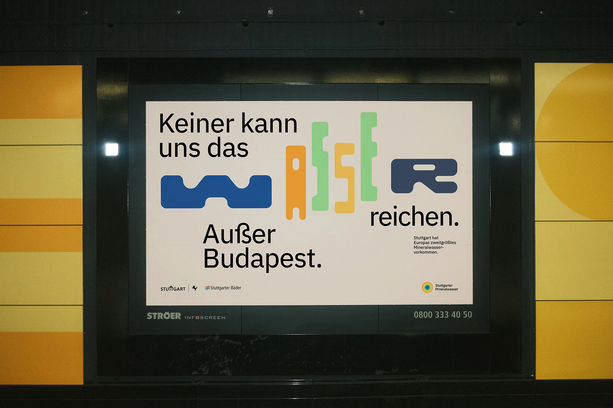
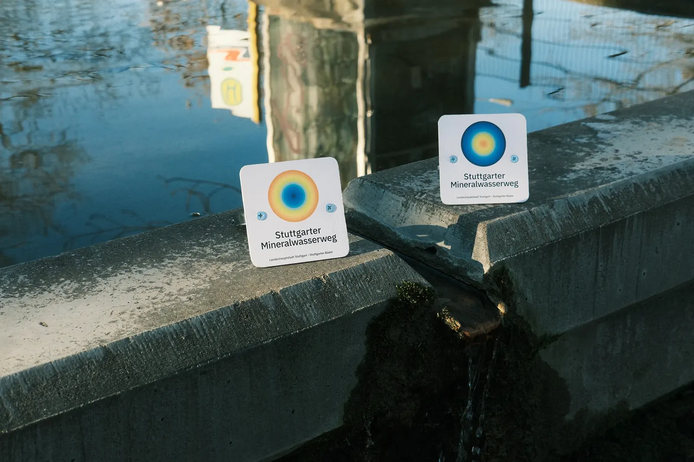
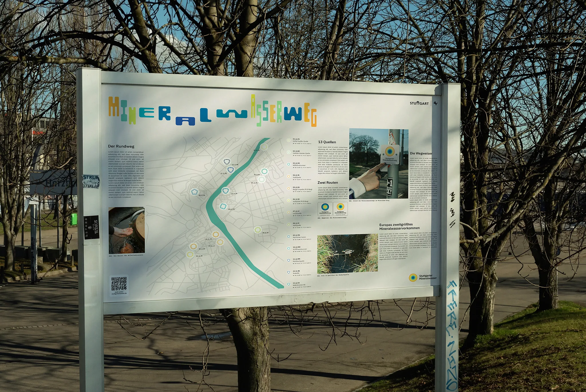
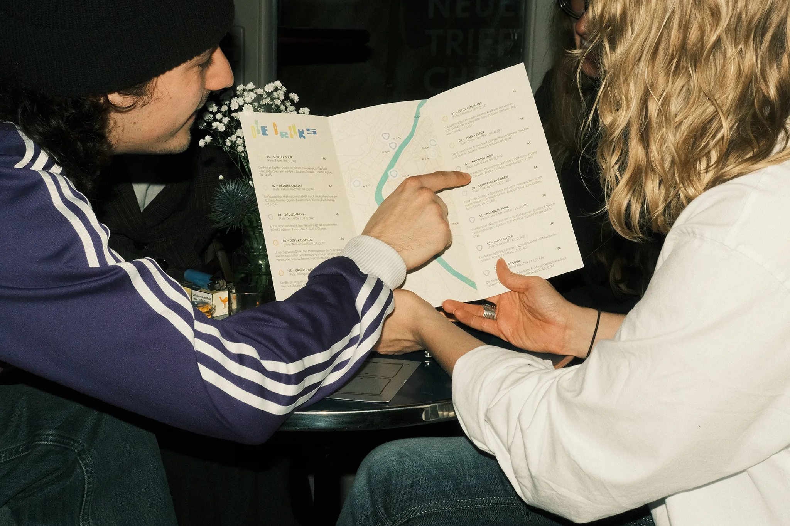
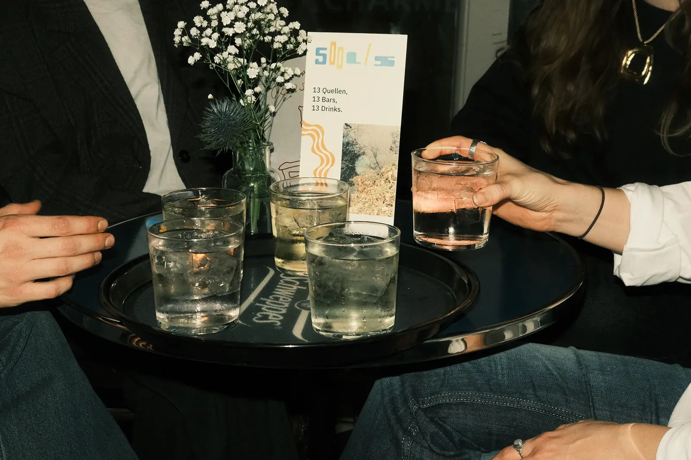

— 01
500l/s
Stuttgart Baths

— 01500l/s
Stuttgart BathsAfter Budapest, Stuttgart is home to Europe's second-largest mineral water deposit. 19 springs pump 44 million liters (500 liters per second) to the surface every single day. However, this urban treasure is practically invisible to the city's young population, with 75% being completely unaware of its existence. The water is physically and culturally repositioned within the city: a physical "mineral water trail" makes the springs visible in the urban space, while local bars take on "spring sponsorships," transforming traditional health spa water into signature drinks at the bar. The core of this new brand identity is a generative design system that turns chemical facts into visual communication. A custom script translates measurement data from 13 distinct springs into individual waveforms, resulting in the custom typeface "500l/s" with 13 unique styles.
- TDC Young Ones 2026Finalist
- ADC Young Ones 2026Finalist
- ADC Talent Award 20261× Shortlist
Subtitles available — press CC









- Year
- 2026
- Client
- Stuttgart Baths
- Role
- Art Direction
- Supervision
- Prof. Ursula Drees, Lucie Ilg
- Awards
- TDC Young Ones 2026 — Finalist
ADC Young Ones 2026 — Finalist
ADC Talent Award 2026 — 1× Shortlist